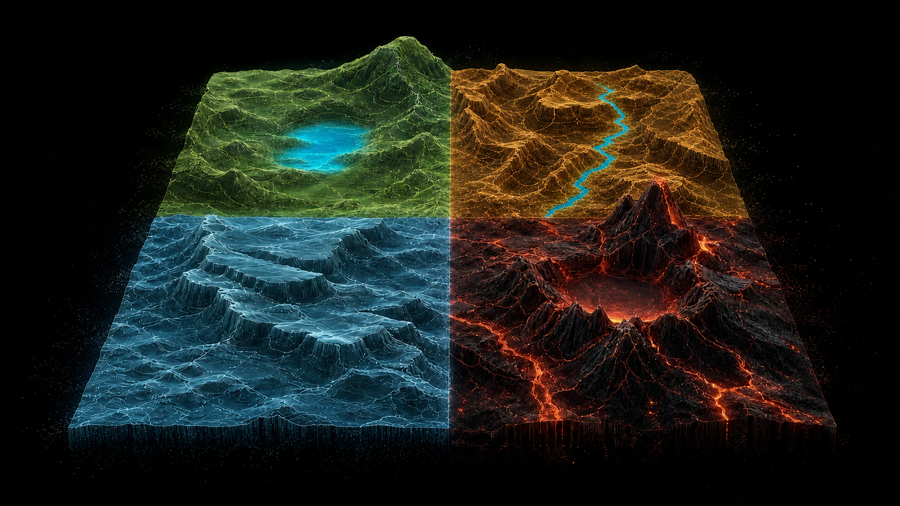

NormalNo edge
Let stock selection, not market mood, drive the decision.
Loading market data…
PANIC × EARNINGS HEALTH
Price stress moves left to right. Consensus earnings health moves bottom to top. One landscape shows whether fear is useful, justified, or dangerously absent.

READ THE MAP
Each zone translates the relationship between market fear and consensus earnings health into one clear research response.
Let stock selection, not market mood, drive the decision.
Fear is extreme while EPS revisions remain healthy. Check valuation, rates, and company-level evidence before considering deployment.
Calm prices hide weakening EPS revisions. Investigate estimate risk instead of treating calm as safety.
Fear and earnings damage agree. Require stabilization before treating the setup as a candidate.
COMPONENT INDICATORS
Panic uses up to five years of history, with at least one year required. Consensus Earnings Health uses direct EPS revision magnitude and revision breadth, with tiny changes treated as neutral. Valuation stays separate as entry context.
WHY I BUILT THIS
I built the Panic / Consensus Earnings Health Engine because volatility is useful, but it is not an investment decision. VIX tells us when protection is expensive. It does not tell us whether forward earnings estimates are holding up.
Very short-dated contracts, systematic hedging, and concentrated index leadership can move volatility without proving that the underlying businesses are broken. VIX answers only one part of the question: how nervous is the market?
This is not a momentum indicator or a stand-alone volatility indicator. The period after the Iran conflict shows why simple volatility comparisons can mislead: a reading may look as severe as, or worse than, parts of the 2020 COVID shock even when market prices and earnings expectations tell a different story. The engine never treats volatility alone as a buy or sell signal. It asks whether market fear is confirmed by broad deterioration in forward earnings expectations.
The engine keeps the evidence clean. Panic measures market stress. Consensus Earnings Health measures only next-year EPS revision direction and the breadth of companies receiving upgrades. Valuation, equity risk premium, and price-versus-EPS divergence remain entry diagnostics because healthy earnings expectations do not automatically mean an attractive entry.
Dislocation Gap is the distance between the two meters: Consensus Earnings Health plus Panic minus 100. A positive gap means market stress is worse than the earnings evidence. It is a screening signal, not a substitute for valuation or company-level work.
The core values are separation, honest coverage, and decision usefulness. No weak proxy is allowed to masquerade as broken earnings. No incomplete history is presented as validated evidence.